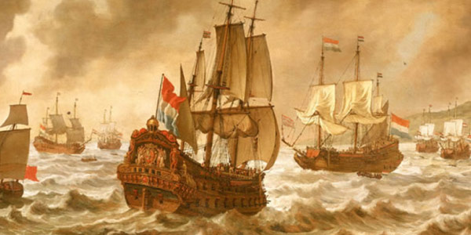
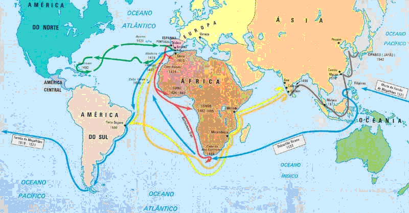
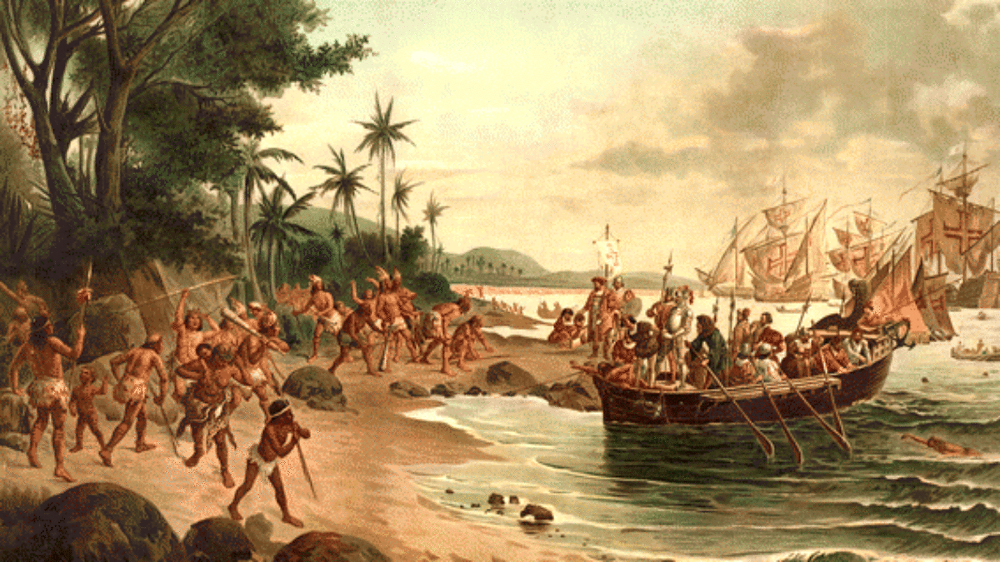

Para podermos entender melhor o Quinhentismo e suas obras, é preciso primeiramente entender o que estava acontecendo nesta época, pois o contexto histórico influencia por completa as expressões artístiscas de um período. Como sabemos, o Quinhentismo brasileiro começou com o "descobrimento" do Brasil por Portugal, que ocorreu graças às Grandes Navegações.
As Grandes Navegações foram navegações realizadas durante o século 15 e 16, graças ao desenvolvimento de novas tecnologias náuticas à Europa que ocasionaram na exploração do oceano Atlântico. Essas expedições foram motivadas pela busca por uam nova rota para chegar às Índias, com o intuito de se obterem especiarias daquela região. Portugal e Espanha tinham adquirido novas tecnologias navais e com esse poderio, decidiram tentar quebrar o monopólio das especiaria por parte dos mercadores italianos e tentaram contornar a África para fazê-lo, conquistando diversos territórios pelo caminho e conseguindo chegar às Índias no fim. Porém, 5 anos após o tratado de Tordesilhas de 1494 entre Portugal e Espanha que dividia o mundo entre esses dois países, Pedro Álvares Cabral decidiu lançar uma expedição para o Oeste, onde hoje se encontra a América, para tentar achar outra rota para as Índias ou mesmo novas terras, seguindo os moldes de Cristóvão Colombo.
Com essa expedição, Pedro Álvares e sua frota chegaram ao território em que hoje é o Brasil no ano seguinte, iniciando o processo de povoamento e colonozição das terras que depois se tornariam o nosso país. Nesta frota estava também Pero Vaz de Caminha, que fez os registros dessa chegada e do que eles descobriram em sua obra de nome "Carta a el-Rei Dom Manoel sobre o achamento do Brasil", que inaugurou o quinhentismo no nosso país. Nos anos que se seguiram, os portugueses começaram a conquistar e povoar o território brasileiro, que anteriormente era habitado por diversos povos indígenas. Assim, surgiram os relatos de viagem e registro da exploração do nosso país e também as obras voltadas à conversão ao catolicismo dos nativos que aqui habitavam, dando origem ao Quinhentismo como conhecemos hoje.
